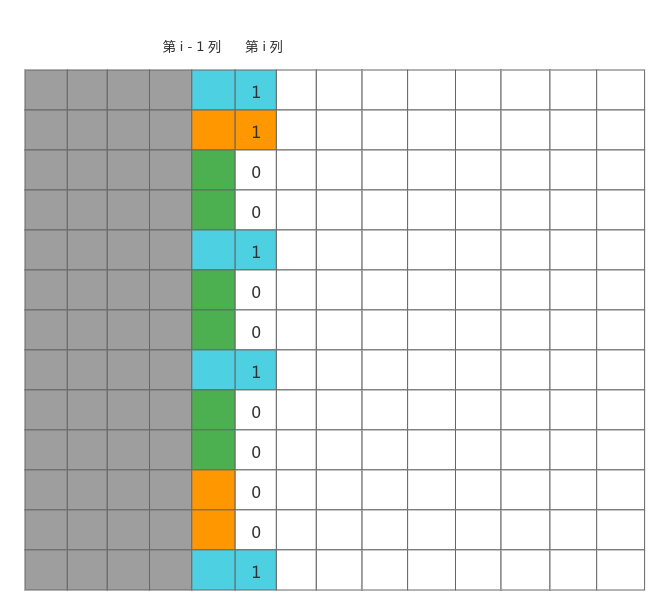

状压DP
Table of Contents
eg. Corn Fields
poj3254 Corn Fields
输入一个矩阵，选择不相邻的方格的方案数
| 1 | 2 | 3 |
| 4 |
可以的方案数有{}、{1}、{2}、{3}、{4}、{1, 3}、{1, 4}、{3, 4}、{1, 3, 4}
单看第一行，使用二进制描述方格，1表示种玉米，0表示不种玉米
| 编号 | 1 | 2 | 3 | 4 | 5 |
| 方案 | 000 | 001 | 010 | 100 | 101 |
单看第二行，使用二进制描述方格，1表示种玉米，0表示不种玉米
| 编号 | 1 | 2 |
| 方案 | 000 | 010 |
如果第二行选编号1，第一行可以选五种不冲突方案
如果第二行选编号2，会与第一行010冲突，其他四种没问题
dp[i][j]表示第i行采用第j种编号的方案时前i行可以得到的可行方案总数
例如dp[2][2] = 4表示第二行使用第二种方案时的方案总数是4
状态转移方程dp[i][k] = dp[i-1][j] (j From 1 To n)
最后一行的dp[m][k]相加就得到了答案
Mondriaan's Dream
给出一个 \(N \times M\) 的棋盘，将这个棋盘分割成若干个 \(1 \times 2\) 的小方块，问方案数是多少。
棋盘分别为 \(2 \times 4\)、\(2 \times 3\) 时的方案如下：

状压 \(DP\) 解决方法：
- 优先排横着的方块，把横着的方块放完之后，剩下的位置自然放竖着的方块，当然要判断放完横着的方块后剩余的位置是否可以放竖着的方块。
- 状态是从前一列转移到当前列。
我们把当前列中被前一列横着放的方块占据的位置记作 \(1\)，没被占据的位置记作 \(0\)，那么我们可以用一个二进制数表示这一列的状态。

例如上面这个图中，第 \(i\) 列的状态就可以用 \(1100100100001\) 来表示。
状态表示：\(dp[i][j]\) 表示已经将前 \(i - 1\) 列放好，第 \(i - 1\) 列中横放的方块且占据第 \(i\) 列的状态为 \(j\) 的方案数。
状态转移：\(dp[i][j] = dp[i - 1][k]\)，这里的 \(k\) 是第 \(i - 1\) 的状态，显然需要满足 \(k \& j == 0\)，也就是不能有横着的方块冲突，而且剩余位置还要能恰好放的下竖着的方块。
#include <cstdio> #include <vector> #include <cstring> using namespace std; const int maxn = 12, maxm = 1 << maxn; typedef long long ll; int n, m; ll dp[maxn][maxm]; vector<int> state[maxm]; bool used[maxm]; int main() { while (scanf("%d %d", &n, &m) && (n || m)) { // 预处理当前状态 i 是否存在，也就是没有奇数长度的空位置 for (int i = 0; i < 1 << n; ++ i) { int cnt = 0; // 这个空位的长度 bool is_valid = true; // 判断是否合法，如果有奇数个零，表示不合法 for (int j = 0; j < n; ++ j) { if (i >> j & 1) { if (cnt & 1) { is_valid = false; break; } cnt = 0; } else { cnt ++ ; } } if (cnt & 1) // 还要判断最后一个空的长度 is_valid = false; used[i] = is_valid; } for (int i = 0; i < 1 << n; ++ i) { state[i].clear(); for (int j = 0; j < 1 << n; ++ j) if ((i & j) == 0 && used[i | j]) // 对于前一列的状态 i 来说，当前列的状态 j 是满足的 // 对于当前列的状态 i 来说，前一列的状态 j 是满足的 state[i].push_back(j); } memset(dp, 0, sizeof dp); dp[0][0] = 1; for (int i = 1; i <= m; ++ i) for (int j = 0; j < 1 << n; ++ j) // i - 1 列横放的方块占据的第 i 列的状态为 j for (int k = 0; k < state[j].size(); ++ k) dp[i][j] += dp[i - 1][state[j][k]]; printf("%lld\n", dp[m][0]); } return 0; }
最短哈密顿路径
又称旅行商问题，给定一张 \(n\) 个点的带权无向图，点从 \(0 \sim n - 1\) 标号，求起点 \(0\) 到终点 \(n - 1\) 的最短 \(Hamiton\) 路径。
\(Hamiton\) 路径的定义是从 \(0\) 到 \(n - 1\) 不重不漏地经过每个点恰好一次。
暴力遍历每一条路径的时间复杂度为 \((n - 2)!\)，复杂度太高，思考剪枝。
0 -> 2 -> 1 -> 3 -> ... 距离：18 0 -> 1 -> 2 -> 3 -> ... 距离：20
观察上面这两条路径，发现我们一定不会选择下面的那条路径。因为对于下面的这条路径，上面路径的后面一部分可以和下面路径的一样，而前一部分又小于下面路径所以一定不选择下面这条路径。
推广到一般情况，现在已经选择了一部分点，对于后面的点的选择，我们只需要知道前面路径的最短路径和前面路径的最后一个点。
对于点的选择，我们使用状态压缩。
状态表示：\(dp[state][x]\) 表示当前状态是 \(state\)，且最后一个点是点 \(x\)。
于是有：\(dp[state][j] = dp[state_k][k] + dist[k][j]\)，即：当前状态（最后一个点的位置是 \(j\)）由当前状态去除最后一个点 \(j\) 且最后一个点是 \(k\) 的状态转移过来。